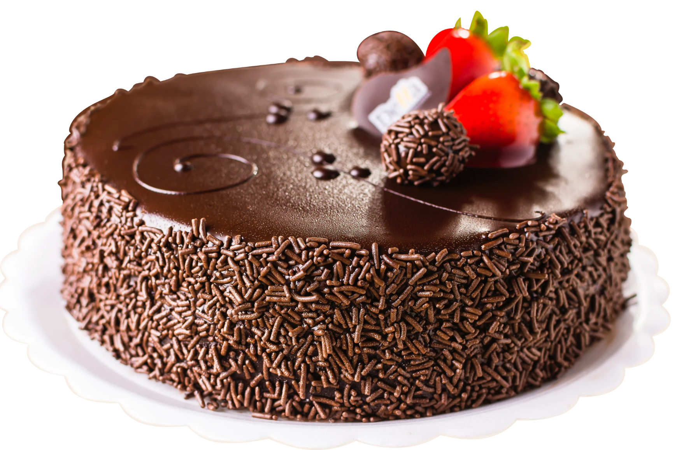
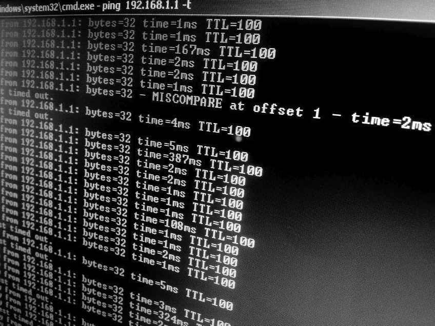
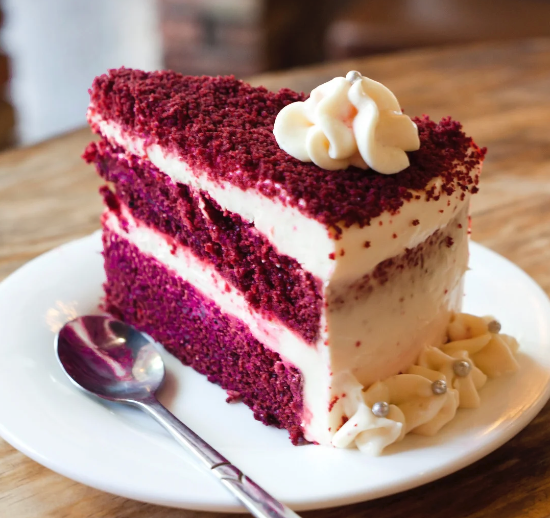
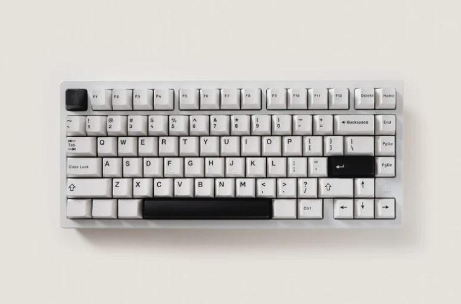

Hoje o dia é todo dela! Parabéns para a melhor mãe do mundo, Dona Regina Silva! Obrigado por me ensinar tudo o que sei. Te amo!
❤️ 142 curtidas10/07/2026
08/07/2026
Segunda-feira só começa de verdade depois da terceira xícara de café espresso duplo. Bora para cima que a semana está só começando!
❤️ 34 curtidas05/07/2026
Marginal Pinheiros travada como sempre. Que saudade do home office pleno...
❤️ 12 curtidas03/07/2026

Parece que foi ontem que você nasceu. Hoje a minha BIA, Beatriz completa 8 anos de muita alegria nas nossas vidas! Papai te ama demais, Bia! 🎉🎂
❤️ 210 curtidas28/06/2026
Que roubo! Juiz acabou com o jogo hoje. Sem condições de assistir campeonato esse ano. Vergonha.
❤️ 45 curtidas25/06/2026

Quem nunca quase dropou um banco de dados em produção em plena quinta-feira não sabe o que é adrenalina kkkkk rindo para não chorar.
❤️ 98 curtidas20/06/2026
Esse é o verdadeiro dono da casa. Nosso parceiro de quatro patas, o Thor, destruindo mais uma almofada da sala.
❤️ 180 curtidas17/06/2026
Terminei hoje a leitura de 'O Poder do Hábito'. Leitura altamente recomendada para quem quer melhorar a rotina de trabalho e foco.
❤️ 29 curtidas14/06/2026
Dia de pescaria com o coroa! Seu Geraldo Silva continua sendo o melhor pescador da família (ou pelo menos o que conta as melhores mentiras!).
❤️ 88 curtidas10/06/2026
Pago! Corrida de 5km na chuva para lavar a alma e queimar a pizza do final de semana. Foco no objetivo!
❤️ 52 curtidas06/06/2026
Maratonando a nova temporada daquela série de ficção científica. Simplesmente genial o roteiro. Alguém mais assistindo?
❤️ 15 curtidas01/06/2026

Hoje comemoro a chegada dos meus 36 anos de vida! Agradeço a Deus por mais um ano cheio de saúde, família e conquistas. (Sim, nasci no primeiro dia de junho, o melhor mês!).
❤️ 312 curtidas28/05/2026
Domingão pede aquela carne assada de lei. Bom domingo a todos os amigos!
❤️ 115 curtidas15/05/2026
Feliz demais em anunciar que hoje completo meu primeiro mês oficial como Gerente na InovaTech Soluções! O time me recebeu incrivelmente bem.
❤️ 240 curtidas12/05/2026
Frio repentino em SP. Casaco que estava guardado há 2 anos finalmente viu a luz do dia.
❤️ 19 curtidas08/05/2026
Lendo artigos sobre o impacto de IA Generativa no gerenciamento de projetos de tecnologia.
❤️ 41 curtidas03/05/2026
Noite do rodízio japonês com a patroa para comemorar o fim de uma semana exaustiva.
❤️ 73 curtidas28/04/2026
Migrando os dados para o celular novo. Que parto é fazer backup de aplicativo de banco hoje em dia, burocracia sem fim.
❤️ 22 curtidas24/04/2026
Não limite seus desafios. Desafie seus limites!
❤️ 11 curtidas20/04/2026

Chegou meu novo brinquedo! Teclado mecânico com switch marrom.
❤️ 67 curtidas15/04/2026
Ouvindo um bom rock clássico dos anos 80 no fone para concentrar enquanto escrevo os OKRs.
❤️ 30 curtidas09/04/2026
Tbt daquela viagem inesquecível para o Nordeste. A cabeça tá na planilha mas o coração tá nessa praia.
❤️ 145 curtidas05/04/2026
Sensacional a discussão no podcast de tecnologia de hoje sobre cibersegurança empresarial.
❤️ 18 curtidas03/04/2026
Sextou da melhor forma! Uma boa IPA artesanal para comemorar que a sprint foi entregue.
❤️ 55 curtidas30/03/2026
Academia vazia na segunda-feira à noite é um milagre que deve ser registrado. Foco!
❤️ 28 curtidas26/03/2026
São Paulo não é para amadores. Choveu 2 gotas e a cidade inteira entra em pane de trânsito.
❤️ 14 curtidas22/03/2026
Golaço! Esse atacante novo calou a minha boca hoje. Vamos subir na tabela!
❤️ 40 curtidas15/03/2026
Tradicional pizza de domingo à noite com a família reunida na sala assistindo TV.
❤️ 92 curtidas11/03/2026
Aquela reunião de alinhamento que poderia facilmente ter sido resolvida com um simples e-mail de duas linhas...
❤️ 61 curtidas07/03/2026
Organizando as gavetas do escritório do home office. Achei adaptadores de 2018.
❤️ 23 curtidas01/03/2026
Iniciando o mês com novos planos, novos projetos e energia renovada no trabalho.
❤️ 33 curtidas25/02/2026
Hoje o treino rendeu bem. 6km batendo o recorde pessoal de tempo do mês passado.
❤️ 19 curtidas20/02/2026
Almoço rápido de hoje: aquele PF de respeito no restaurante de sempre na esquina da empresa.
❤️ 27 curtidas14/02/2026
Sábado é dia de mercado. Carrinho cheio de compras, preços altos como sempre.
❤️ 10 curtidas10/02/2026
Mais um bug resolvido na calada da noite pelo time de engenharia. Vocês são feras!
❤️ 50 curtidas05/02/2026
Não aguento mais esse calor sem fim. Onde aperta para o inverno voltar urgente?
❤️ 15 curtidas01/02/2026
Chegamos em fevereiro! O ano está passando voando, mal dá tempo de piscar.
❤️ 8 curtidas28/01/2026
Dica de livro para quem lidera equipes técnicas: 'The Mythical Man-Month'. Clássico absoluto.
❤️ 38 curtidas22/01/2026
Bela apresentação dos novos objetivos globais do trimestre hoje na empresa.
❤️ 45 curtidas18/01/2026
Passeio no parque com a família para recarregar as energias para a rotina.
❤️ 105 curtidas14/01/2026
Aquela preguiça pós-almoço no trabalho de escritório que só um café bem forte cura.
❤️ 12 curtidas09/01/2026
Sexta-feira chuvosa em SP. Ótimo pretexto para ficar em casa e colocar as séries em dia.
❤️ 31 curtidas05/01/2026
Primeira segunda-feira de trabalho útil do ano. Metas traçadas, foco no plano.
❤️ 41 curtidas31/12/2025
Adeus 2025! Que 2026 venha cheio de prosperidade, saúde e paz para todos nós!
❤️ 188 curtidas25/12/2025
Natal com mesa farta, risadas com os tios e as clássicas piadas de pavê. Feliz Natal!
❤️ 120 curtidas20/12/2025
Confraternização de final de ano do time da empresa foi excelente. Valeu a parceria!
❤️ 76 curtidas15/12/2025
Entrando no clima de fim de ano. O cansaço bate forte em dezembro, mas o dever foi cumprido.
❤️ 22 curtidas10/12/2025
Corrida rápida na esteira só para não perder o hábito de me movimentar na semana.
❤️ 18 curtidas05/12/2025
Incrível como o ano passou de pressa. Parece que o carnaval foi ontem.
❤️ 9 curtidas01/12/2025
Dezembro chegou. Hora de fechar os últimos projetos e planejar o merecido descanso.
❤️ 30 curtidas25/11/2025
Assistindo documentário sensacional sobre a história das grandes empresas do Vale do Silício.
❤️ 25 curtidas20/11/2025
Feriado no meio de semana é excelente para quebrar a rotina cansativa.
❤️ 40 curtidas15/11/2025
Aproveitando o feriado para dormir até tarde e não pensar em problemas de banco de dados.
❤️ 52 curtidas10/11/2025
Chuva fina em São Paulo. O clima perfeito para comer um bom caldo quente no jantar.
❤️ 16 curtidas05/11/2025
Mais um dia produtivo. Planejamento estratégico de tecnologia finalizado com sucesso.
❤️ 28 curtidas01/11/2025
Novembro começou. A contagem regressiva para o término do ano de trabalho foi ativada.
❤️ 11 curtidas28/10/2025
Aquele churrasco simples no sábado para recarregar o ânimo após semanas difíceis.
❤️ 87 curtidas22/10/2025
Reunião presencial com os diretores de tecnologia hoje. Novidades muito boas vindo por aí.
❤️ 63 curtidas15/10/2025
Dia dos professores! Um abraço especial para todos que dedicam a vida a ensinar.
❤️ 45 curtidas12/10/2025
Dia das crianças com muita bagunça no quintal de casa. Ver a alegria deles não tem preço.
❤️ 99 curtidas